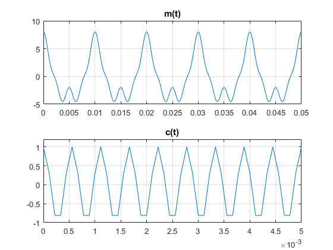
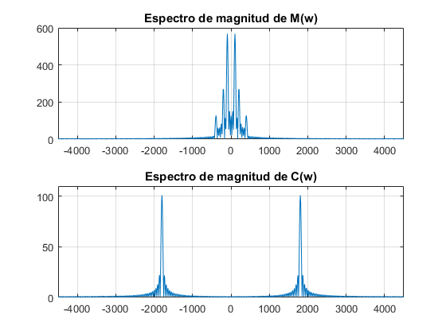
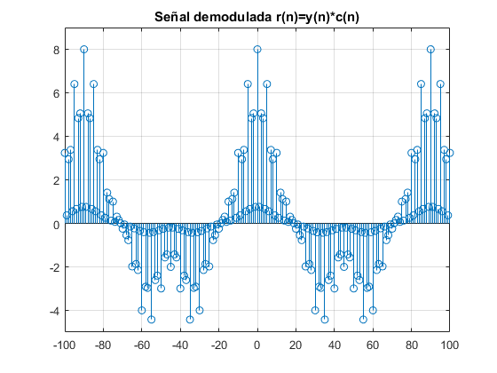

Contents
- Aplicacion de filtros FIR de fase lineal en la Toria de Comunicaciones
- Modulacion Graficar las señales analogicas m(t) y c(t) en tiempo continuo
- Muestrear las señales analogicas m(t) y c(t) utilizando la frecuencia de muestreo fs=9000Hz
- Graficar las señales m(n) y c(n) en tiempo discreto
- Calcular la tranformada de Fourier de m(t) y c(t) utilizando las muestras
- Obtener la señal modulada y(n)=m(n)*c(n) y graficarla en tiempo discreto
- Calcular la tranformada de y(t) usando las muestras y(n) y graficar el espectro de magtnitud
- Demodulacion Obtener la señal r(n)=y(n)c(n) y graficar en tiempo discreto
- Graficar el espectro de magnitud de r(n)
- Eliminar las bandas laetrales de r(n) mediante un filtro FIR simetrico con
- Graficar la señal m2(n) y su espectro de magnitud
Aplicacion de filtros FIR de fase lineal en la Toria de Comunicaciones
Simular un sistema de modulacion DSB-SC (doble banda lateral con portadora suprimida), utilizando la señal moduladora m(t) y portadorac(t)
clear all; close all;
Modulacion Graficar las señales analogicas m(t) y c(t) en tiempo continuo
Funciones continuas
Fs = 9000; dt = 1/Fs; paso = 0.25; t = (0:dt:paso-dt)'; mt=@(t) 5*cos(2*pi*t*100)+2*cos(2*pi*t*200)+cos(2*pi*t*400); ct=@(t) cos(2*pi*t*1800); figure(1); subplot(2,1,1); plot(t, mt(t)); title('m(t)') axis([0 .05 -5 10]); grid on; subplot(2,1,2); plot(t, ct(t)); title('c(t)') axis([0 .005 -1 1.2]); grid on;
Muestrear las señales analogicas m(t) y c(t) utilizando la frecuencia de muestreo fs=9000Hz
Frecuencia y Periodo de Muestreo
fs=9000; Ts=1/fs; n=-100:100; % Omegas y funcion m. w=2*pi*f w0=2*pi*100*Ts; w1=2*pi*200*Ts; w2=2*pi*400*Ts; mn=5*cos(w0*n)+2*cos(w1*n)+cos(w2*n); % Omega y funcion c w3=2*pi*1800*Ts; cn=cos(w3*n);
Graficar las señales m(n) y c(n) en tiempo discreto
Grafica
figure(2); subplot(2,1,1); stem(n, mn); axis([-100 100 -6 9]) title('m(n)') grid on; subplot(2,1,2); stem(n, cn); axis([-100 100 -1 1.2]) title('c(t)') grid on;
Calcular la tranformada de Fourier de m(t) y c(t) utilizando las muestras
obtenidas m(n) y c(n) y graficar los espectros de magnitud(espectros continuos) Mostrar en el eje horizontal la frecuencias reales de las señales en Hz Tranformada para m y centramos
M=fftshift(fft(mn,1000)); % Tranformada de c y centramos C=fftshift(fft(cn,1000)); % Graficas f=linspace(-fs/2,fs/2,1000); %Frecuencia real figure(3); subplot(2,1,1); plot(f, abs(M)); axis([-4500 4500 0 600]) title('Espectro de magnitud de M(w)') grid on; subplot(2,1,2); plot(f, abs(C)); axis([-4500 4500 0 110]) title('Espectro de magnitud de C(w)') grid on;
Obtener la señal modulada y(n)=m(n)*c(n) y graficarla en tiempo discreto
y=mn.*cn; figure(4); subplot(2,1,1); plot(n,y); title('Señal modulada y(t)=m(t)*c(t)') grid on; subplot(2,1,2); stem(n, y); title('Señal modulada y(n)=m(n)*c(n)') grid on;
Calcular la tranformada de y(t) usando las muestras y(n) y graficar el espectro de magtnitud
Mostrar en el eje horizontal las frecuancias reales de las señales en Hz
Y=fftshift(fft(y,1000)); figure(5); plot(f, abs(Y)); title('Espectro de Magnitud de Y(w)') axis([-4500 4500 0 290]) grid on;
Demodulacion Obtener la señal r(n)=y(n)c(n) y graficar en tiempo discreto
r=y.*cn; figure(6); stem(n,r); axis([-100 100 -5 9]) title('Señal demodulada r(n)=y(n)*c(n)') grid on;
Graficar el espectro de magnitud de r(n)
Tranformada de r
R=fftshift(fft(r,1000)); figure(7); plot(f, abs(R)); % axis([-100 100 -5 9]) title('Espectro de magnitud de R(w)') grid on;
Eliminar las bandas laetrales de r(n) mediante un filtro FIR simetrico con
M=100, obteniendo la señal m2(n)
M=100; A=Ank(M); % Matriz de filtro Hr=[ones(1,9) zeros(1,41)]; % Coeficientes h=inv(A)*Hr'; h=[h;flipud(h)]; % Respuesta al impulso para pasa bajas w=-pi:0.001:pi; % Omega Hw=0; for n=0:M/2-1 Hw= Hw+2*h(n+1)*cos(((M-1)/2-n)*w); % Suma cofecientes end % Grafica figure(8); plot(w*4000./(2*pi),20*log10(abs(Hw))) title('Filtro Simetrico Par'); axis([-1000 1000 -100 10]) grid on; % Convolucion para eliminar las bandas m2=conv(h,r);
Graficar la señal m2(n) y su espectro de magnitud
Transformada de m2
M2=fftshift(fft(m2)); % Grafica n2=linspace(-100,100,length(m2)); f2=linspace(-fs/2,fs/2,length(M2)); figure(9); subplot(2,1,1); stem(n2,m2); title('m2'); grid on; subplot(2,1,2); plot(f2,abs(M2)); title('Espectro de magnitud M2(w)'); grid on;